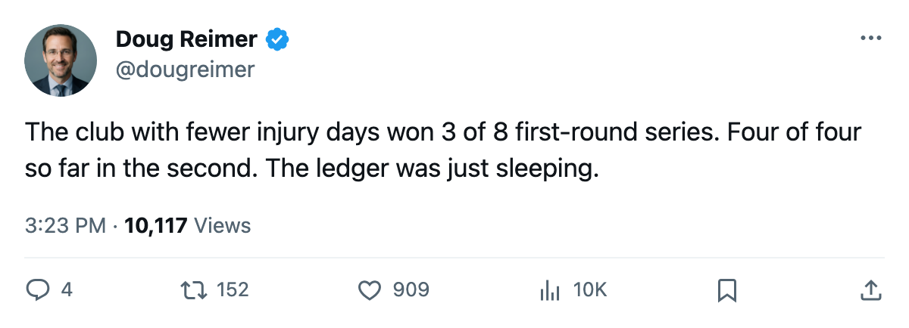
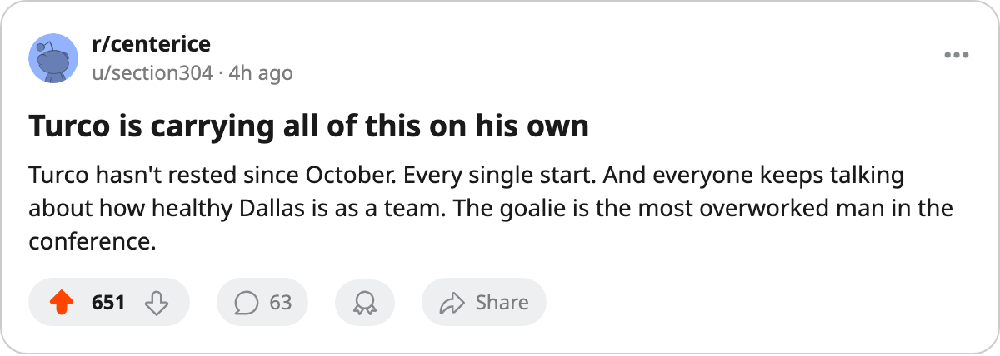

The Ledger Picks 4 of 4 in Round 2. In Round 1 It Picked 3 of 8.
The four clubs leading the second round have combined for 1067 days lost to injury. The four trailing have lost 2181.
 Doug ReimerAnalytics editor, ex-video coach · The Slot Report
Doug ReimerAnalytics editor, ex-video coach · The Slot Report
The piece
The four clubs leading Round 2 are the four clubs with fewer days lost to injury. In Round 1 that was true in 3 of 8 series. The sample doubled, and the pattern became absolute.
 Dallas Stars lead
Dallas Stars lead  Phoenix Coyotes 2-1 and sit on 281 days lost across 54 spells. PHX carries 389 across 62. The gap is 108 days, modest by Round 2 standards, but it points the right way.
Phoenix Coyotes 2-1 and sit on 281 days lost across 54 spells. PHX carries 389 across 62. The gap is 108 days, modest by Round 2 standards, but it points the right way.  Toronto Maple Leafs has 130 days, the lowest total in the league, and leads
Toronto Maple Leafs has 130 days, the lowest total in the league, and leads  Pittsburgh Penguins which lost 674.
Pittsburgh Penguins which lost 674.  Washington Capitals has 354 against
Washington Capitals has 354 against  Tampa Bay Lightning's 633.
Tampa Bay Lightning's 633.  Edmonton Oilers has 302 against
Edmonton Oilers has 302 against  Mighty Ducks of Anaheim's 485.
Mighty Ducks of Anaheim's 485.
The 4 winning clubs have lost a combined 1067 days. The 4 losing clubs: 2181.
The severity number, not the spell count
Spells are misleading. Toronto Maple Leafs logged 72 injury designations, more than any club in the league. Yet the sum is 130 days, because most were single-game scratches. Pittsburgh Penguins logged 61 spells and lost 674 days. The average TOR absence lasts 1.8 games. The average Pittsburgh absence lasts 11.0.
| club | spells | days | avg days per spell | round 2 status |
|---|---|---|---|---|
| TOR | 72 | 130 | 1.8 | leading 2-1 |
| DAL | 54 | 281 | 5.2 | leading 2-1 |
| EDM | 40 | 302 | 7.6 | leading 2-1 |
| WSH | 54 | 354 | 6.6 | leading 3-0 |
| PHX | 62 | 389 | 6.3 | trailing 1-2 |
| ANA | 61 | 485 | 8.0 | trailing 1-2 |
| TB | 61 | 633 | 10.4 | trailing 0-3 |
| PIT | 61 | 674 | 11.0 | trailing 1-2 |
The four clubs ahead average 5.3 days per spell. The four behind average 8.9. The difference is not how often the trainer's room fills, it is how long the man stays in it.
Round 1 did not follow the rule
In the first round, the club with fewer regular-season days lost won only 3 of 8 matchups. Pittsburgh Penguins eliminated  New Jersey Devils despite a 674-day deficit against NJ's 122. Tampa Bay Lightning beat
New Jersey Devils despite a 674-day deficit against NJ's 122. Tampa Bay Lightning beat  Boston Bruins on 633 days against BOS's 400. Washington Capitals swept
Boston Bruins on 633 days against BOS's 400. Washington Capitals swept  Carolina Hurricanes carrying 354 days against CAR's 216. Phoenix Coyotes needed 7 games to send home
Carolina Hurricanes carrying 354 days against CAR's 216. Phoenix Coyotes needed 7 games to send home  Colorado Avalanche, which had 258 days to PHX's 389.
Colorado Avalanche, which had 258 days to PHX's 389.
| series (R1) | winner | winner days | loser days | healthier won? |
|---|---|---|---|---|
| TOR v NYI | TOR | 130 | 320 | yes |
| NJ v PIT | PIT | 674 | 122 | no |
| TB v BOS | TB | 633 | 400 | no |
| WSH v CAR | WSH | 354 | 216 | no |
| COL v PHX | PHX | 389 | 258 | no |
| DAL v DET | DAL | 281 | 595 | yes |
| ANA v NSH | ANA | 485 | 423 | no |
| VAN v EDM | EDM | 302 | 453 | yes |
Below a coin flip.
What changed between rounds
Nothing on the roster. Eight clubs entered Round 2 carrying the same regular-season totals that failed to predict Round 1 winners. The only difference is load. Every player in this field has now logged a full regular season plus at least one round of playoffs. The men who missed 11.0 days per absence in October have had those absences compounded by 5 or 6 playoff games played on one fewer body.
Phoenix Coyotes is the best illustration of why the pattern is not absolute. Their 389 days is the second-lowest among the losing four, and their gap to Dallas Stars is 108 days, the smallest of any Round 2 pairing. PHX won Game 2 of this series 3-1 on the road. Dallas Stars answered with 4-1 on the road in Game 3. The healthier club leads by the smallest gap in this round.
Mighty Ducks of Anaheim carries 485 days across 61 spells, 8.0 per absence. Their playoff scoring leader  Andy McDonald70 has 6+2=8 in 8 games while
Andy McDonald70 has 6+2=8 in 8 games while  Sergei Fedorov86 carries 5+2=7 at age 35 on 23.1 minutes a night. They trail Edmonton Oilers 2-1.
Sergei Fedorov86 carries 5+2=7 at age 35 on 23.1 minutes a night. They trail Edmonton Oilers 2-1.
Dallas, the cleanest case
Dallas Stars finished 42-24-7 with $0.62M per point on the payroll. Their injury ledger, 54 spells and 281 days, is the 19th-highest total among 30 clubs.  Marty Turco97 played 68 of 82 (83%) in the regular season and has been given no rest since: 5-1, 1.43 GAA, .919 save percentage through two rounds. He has not been spared a single start.
Marty Turco97 played 68 of 82 (83%) in the regular season and has been given no rest since: 5-1, 1.43 GAA, .919 save percentage through two rounds. He has not been spared a single start.
That is the one variable that could break the pattern in Dallas Stars's favor or against it. The team is healthy, the goaltender is not rested.  Roberto Luongo95 at Toronto Maple Leafs started 45 in 82 (55%) and carries 5-2 with a 1.73 GAA through the first two rounds. He was worked through in the regular season and still has something left.
Roberto Luongo95 at Toronto Maple Leafs started 45 in 82 (55%) and carries 5-2 with a 1.73 GAA through the first two rounds. He was worked through in the regular season and still has something left.
Forward
Game 4 goes Thursday at Phoenix Coyotes and at Pittsburgh Penguins. On Friday Mighty Ducks of Anaheim hosts Edmonton Oilers and Tampa Bay Lightning travels to Washington Capitals. The ledger says the away club in all four should win. Whether it will is the question Round 1 already answered once.
| matchup | next date | leader (healthier) | deficit |
|---|---|---|---|
| DAL at PHX | 2005-04-28 | DAL | 108 days |
| TOR at PIT | 2005-04-28 | TOR | 544 days |
| ANA v EDM | 2005-04-29 | EDM | 183 days |
| TB at WSH | 2005-04-29 | WSH | 279 days |

